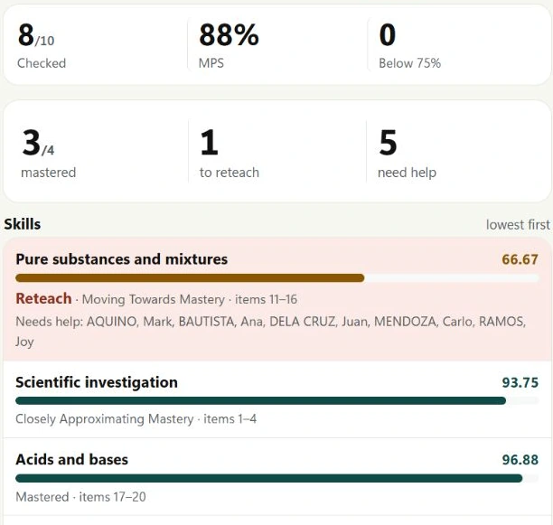
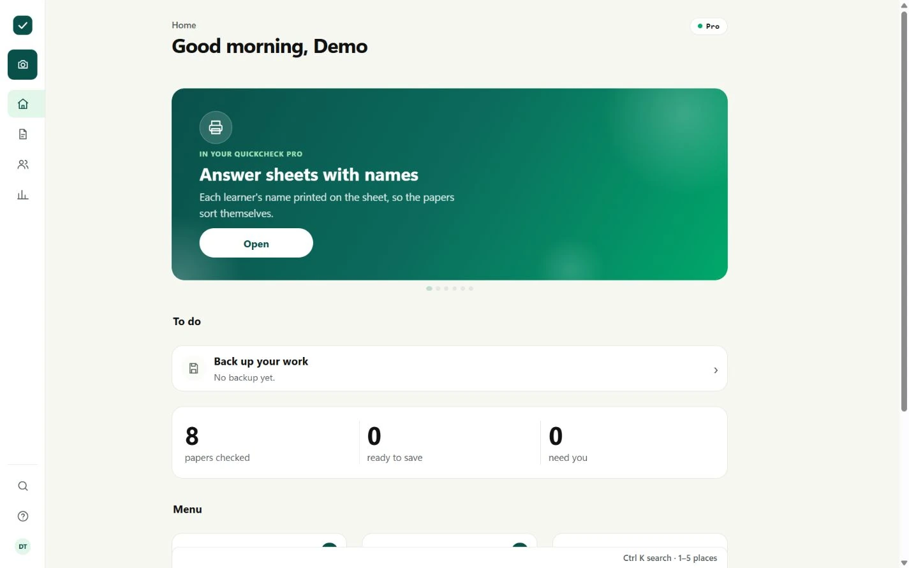
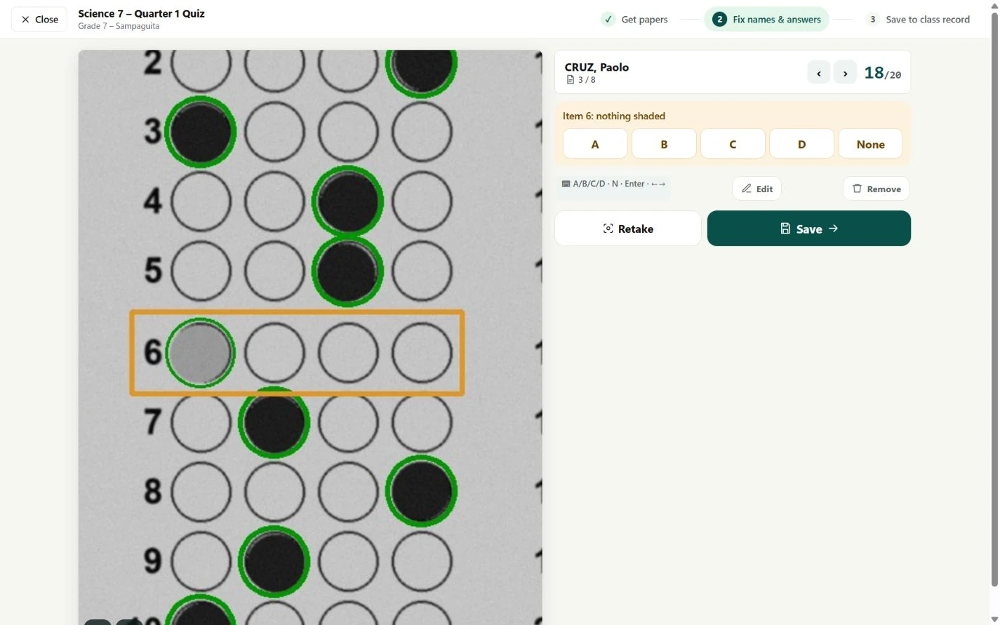
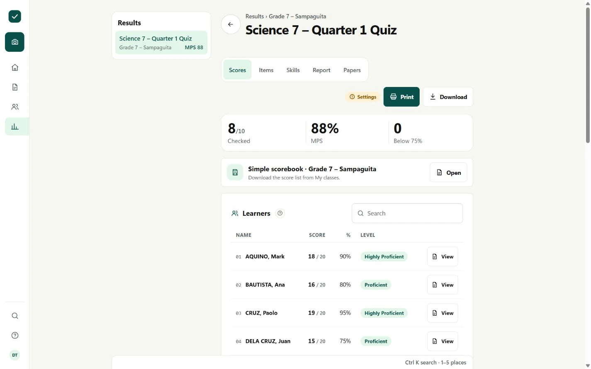
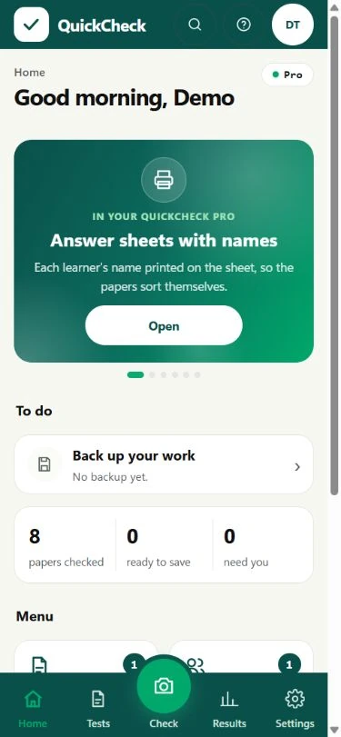
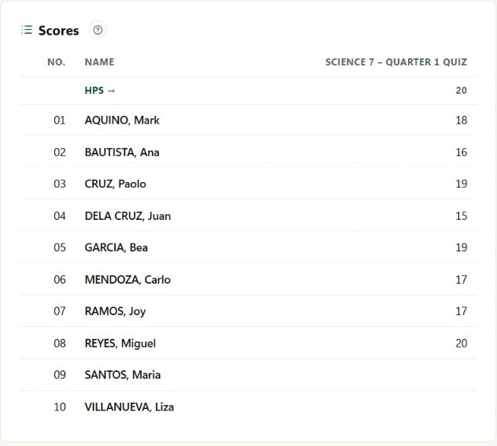

01 / UNDERSTAND
Find the gaps.
Plan the next lesson.
See hard questions and least-mastered competencies.
Know where a little more teaching can make a difference.

A LITTLE LESS WORK. A LOT MORE CLASSROOM.
Turn a pile of answer sheets into scores, class records,
and a clearer picture of what to teach next.
Windows & Android • Free to start • No account needed




Made for the way
teachers actually work.
THE WHOLE PICTURE
From the first photo to the next lesson.
Everything you need, with a little less effort.
See hard questions and least-mastered competencies.
Know where a little more teaching can make a difference.

Review the papers, then save the scores into your class record. A backup is made before every write.

A FAMILIAR ROUTINE. FEWER STEPS.
Add your class, set the answer key, and print sheets on ordinary A4 paper.
Photograph or upload the papers. Review unclear marks before you save.
Get scores and item analysis. Add Pro for competency reports and more.
MEET QUICKCHECK FOR ANDROID
Check papers with your phone camera and see the score at once. Classes, tests, and scores sync with your laptop using your key.
START SMALL. GO AT YOUR PACE.
Start with Free. Add Pro when your classroom needs more.
A good place to start. And stay.
For the bigger picture of your class.
Your first 7 days include Pro features. After that, Free is still yours.
Need licences for a department? Let’s talk.
READY FOR PRO?
Choose a plan, send your payment, then message AZ Digital Marketing with your name and payment receipt. We’ll send your activation key.
Email usOr message us on Facebook ↗Every purchase includes a 7-day money-back guarantee.Already using Free? Your classes and scores stay when you activate Pro.
Start with your class list and a test. Add its answer key, print the QuickCheck sheets, and photograph the completed papers. The teacher guide walks through each step, and the browser demo lets you practise with sample papers.
On Windows, checking papers, printing sheets, and making reports work offline. You need internet to download QuickCheck and activate Pro. To scan from a phone browser, connect the phone and computer to the same Wi-Fi.
No special scanner. Use your phone camera or upload photos, a scanned PDF, or a ZIP of answer sheets. Print QuickCheck’s answer sheets on plain A4 paper. The printed markers help QuickCheck read the bubbles.
Yes. Review the paper, correct any misread answers, and choose the learner before saving. QuickCheck makes a backup before writing into your class record.
QuickCheck returns to Free until you renew. Your saved work stays. You can choose Pro monthly, yearly, or pay once for a lifetime licence.
LESS ON YOUR DESK. MORE IN YOUR DAY.
Make a little room for the work you love.
Windows 10 & 11 · Free to start · No account needed
Prefer the portable ZIP? Download it here ↗